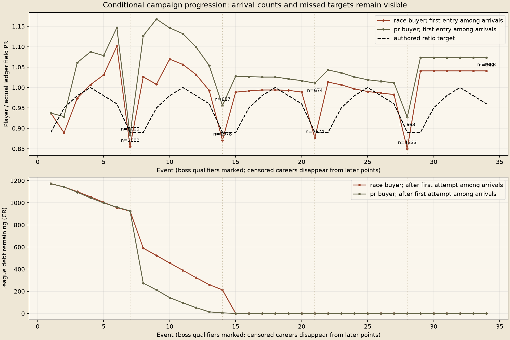
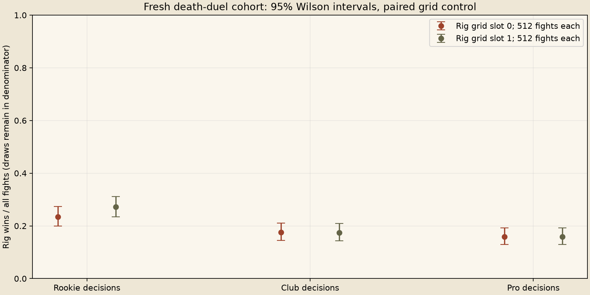

Rejected: higher shared caps and Marrow 610 Duel viability improved, but same-seed Champion winner share shifted about 20 points and PR-policy completion worsened. Higher caps and the 610 ceiling are not shipped.
Fresh physical outcomes, conditional ledger resampling, no human feel verdict. Failed targets and censored careers remain results.


Race buyer uses two training seeds to pick each chassis; PR buyer is the control. Both resample the other two regular-event seeds and eighteen held-out boss seeds. The 70-race observation limit censors unfinished careers.
| Buyer | Decisions | Reward | N | Completed | Censored | Bankrupt | Finale arrived |
|---|---|---|---|---|---|---|---|
| race | Rookie | money | 223 | 0 | 223 | 0 | 0 |
| race | Rookie | car | 222 | 0 | 222 | 0 | 0 |
| race | Rookie | part | 222 | 0 | 222 | 0 | 0 |
| race | Club | money | 223 | 208 | 15 | 0 | 221 |
| race | Club | car | 222 | 204 | 18 | 0 | 221 |
| race | Club | part | 222 | 202 | 20 | 0 | 220 |
| race | Pro | money | 222 | 216 | 6 | 0 | 222 |
| race | Pro | car | 222 | 219 | 3 | 0 | 222 |
| race | Pro | part | 222 | 218 | 4 | 0 | 222 |
| pr | Rookie | money | 223 | 0 | 223 | 0 | 0 |
| pr | Rookie | car | 222 | 0 | 222 | 0 | 0 |
| pr | Rookie | part | 222 | 0 | 222 | 0 | 0 |
| pr | Club | money | 223 | 0 | 223 | 0 | 0 |
| pr | Club | car | 222 | 0 | 222 | 0 | 0 |
| pr | Club | part | 222 | 0 | 222 | 0 | 0 |
| pr | Pro | money | 222 | 94 | 128 | 0 | 122 |
| pr | Pro | car | 222 | 57 | 165 | 0 | 90 |
| pr | Pro | part | 222 | 85 | 137 | 0 | 111 |
Full measured summary and caveats. Gzip CSV files retain raw outcomes and source hashes.
Q3 versus fresh gameplay library: economy data and obstacles differ, as do physical seeds. This is before/after evidence, not isolation of one causal factor. Each buyer has 2,000 resampled ledgers, not independent end-to-end physical careers.
| Buyer | Skill | N | Completed before | Completed after | Censored after | Finale arrivals after |
|---|---|---|---|---|---|---|
| race | all | 2000 | 1292 | 1267 | 733 | 1328 |
| race | Rookie | 667 | 1 | 0 | 667 | 0 |
| race | Club | 667 | 626 | 614 | 53 | 662 |
| race | Pro | 666 | 665 | 653 | 13 | 666 |
| pr | all | 2000 | 541 | 236 | 1764 | 323 |
| pr | Rookie | 667 | 0 | 0 | 667 | 0 |
| pr | Club | 667 | 0 | 0 | 667 | 0 |
| pr | Pro | 666 | 541 | 236 | 430 | 323 |
| Buyer | Event | PR ratio before | PR ratio after | Arrivals before / after | Target | Boss band met |
|---|---|---|---|---|---|---|
| race | 7 | 0.8551 | 0.855 | 2000 / 2000 | 0.89 | True |
| race | 14 | 0.8658 | 0.8707 | 2000 / 1978 | 0.89 | True |
| race | 21 | 0.9908 | 0.8765 | 1897 / 1674 | 0.89 | True |
| race | 28 | 1.0162 | 0.8497 | 1326 / 1333 | 0.89 | False |
| race | 35 | 0.5211 | 0.5364 | 1306 / 1328 | 0.535 | None |
| pr | 7 | 0.8828 | 0.8829 | 2000 / 2000 | 0.89 | True |
| pr | 14 | 0.9095 | 0.9557 | 700 / 687 | 0.89 | False |
| pr | 21 | 0.9886 | 1.0106 | 666 / 674 | 0.89 | False |
| pr | 28 | 1.0182 | 0.9271 | 650 / 663 | 0.89 | False |
| pr | 35 | 0.5211 | 0.5364 | 595 / 323 | 0.535 | None |
| Buyer | Ally choice policy | N | Completed before | Completed after | Censored after |
|---|---|---|---|---|---|
| race | money | 668 | 426 | 424 | 244 |
| race | car | 666 | 432 | 423 | 243 |
| race | part | 666 | 434 | 420 | 246 |
| pr | money | 668 | 185 | 94 | 574 |
| pr | car | 666 | 172 | 57 | 609 |
| pr | part | 666 | 184 | 85 | 581 |
| Decisions | Wins / all fights before | Wins / all fights after | Draws after | Resolved rig share after |
|---|---|---|---|---|
| Rookie | 299 / 1024 | 259 / 1024 | 82 | 27.49% |
| Club | 248 / 1024 | 179 / 1024 | 67 | 18.70% |
| Pro | 222 / 1024 | 162 / 1024 | 85 | 17.25% |
At least one buyer/event still misses the absolute 0.85-0.90 first-entry boss band. Inspect the policy-specific rows; the target has not been relaxed. Censored careers remain at the unchanged 70-race limit; arrival is not completion. Duel skill win rates are not a calibrated monotonic human difficulty scale. Owner feel, phone comfort and every Stick check pending.
Full before/after, rotation rows, seed overlap and approximation gaps. No fresh physical seeds overlap Q3. Historical dispatcher-off controls are labeled historical, not rerun.